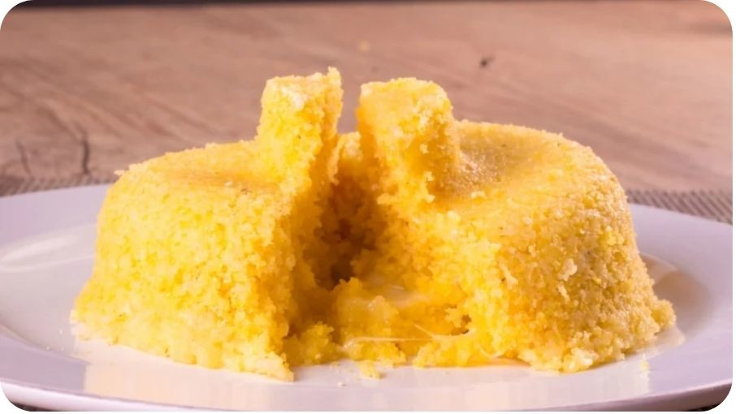

Cuzcuz ft. Corn meal

Description
The Cuscuz is a typical food from the Northeast of Brazil and it's very cheap to prepare! In many places it's used as an alternative for bread.
Ingredients
- 2 cups of corn meal
- 1 teaspoon of salt
- 1 cup of water
Steps
- Mix the corn meal and the salt together, in a bowl.
- Gradually add the water and mix well until all ingredients are moist and mixture has a crumbly texture. Let it stand for 10 minutes.
- Put water to boil in a pot and on top place a pan to steam with the corn meal inside.
- Cover and cook over low heat for about 15 minutes, until it begins to release its aroma.
It's done! You can serve it with coffee, milk, butter, cheese... or whatever you feel like it is good with!
Source: check here.